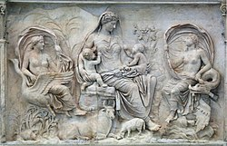

Una mirada crítica a las manifestaciones artísticas de las civilizaciones antiguas
Introducción
La Arqueología del Arte Antiguo no es simplemente el estudio de objetos bellos o monumentos imponentes dejados
por civilizaciones pasadas. Es una disciplina liminar, un campo de investigación fascinante que se sitúa en la
intersección entre la Arqueología, la Historia del Arte, la Antropología y la Estética. Su objetivo fundamental
va más allá de la mera apreciación formal; se trata de una ciencia interpretativa que busca descifrar los
códigos visuales, simbólicos y tecnológicos de las sociedades pretéritas para comprender su cosmovisión, sus
estructuras de poder, sus creencias religiosas y su vida cotidiana.
A diferencia del enfoque tradicional de la Historia del Arte, que a menudo prioriza la evolución de los estilos
y la autoría, la Arqueología del Arte se sumerge en el contexto del que la obra emergió. Cada pigmento, cada
golpe de cincel, cada localización de un petroglifo es tratado como una evidencia material, un testimonio
silencioso que, cuando es interrogado con las herramientas metodológicas correctas, puede revelar narrativas
profundas sobre la humanidad.
Arte del Antiguo Egipto
Rigidez, simbolismo y una estética puesta al servicio del más allá.
Representación simbólica del dios Thot, patrón del conocimiento y la escritura.
El arte del Antiguo Egipto es un lenguaje visual complejo y coherente. Cada línea, color y forma estaba cargada de significado, diseñada no para ser simplemente observada, sino para existir y actuar en un plano cósmico. Es el testimonio monumental de una civilización obsesionada con el orden, la divinidad y, sobre todo, con la victoria sobre la muerte, un legado que, milenios después, sigue despertando nuestra admiración y asombro.
Técnicas y materiales: Piedra caliza, granito, madera, oro, pigmentos minerales; policromía
aplicada con colas orgánicas; técnicas de talla y encaje.
Temas recurrentes: Dioses, faraones, escenas funerarias, ritmos cosmológicos y fórmulas
hieráticas.
Interpretación crítica: El arte como instrumento de legitimación social —los faraones
controlaban la representación para consolidar su poder simbólico—.
Contexto socioeconómico
El Estado centralizado y la economía canalizada por el templo condicionaron la producción artística: talleres
oficiales, control de materiales preciosos y una formación artesanal transmitida por generaciones.
Astronomía, escritura y poder ritual en piedra y pigmento.
Rueda ceremonial maya tallada en piedra con motivos astronómicos.
Sumergirse en el mundo maya es adentrarse en una de las civilizaciones más fascinantes y enigmáticas de la antigua Mesoamérica. Durante siglos, sus majestuosas ciudades, ocultas por la densa selva tropical, guardaron silencio. Hoy, gracias a la arqueología, estas piedras hablan, narrando historias de poderosos reyes, complejos conocimientos astronómicos y una explosión de expresión artística que rivaliza con cualquier cultura del mundo antiguo. Este viaje explora la simbiosis perfecta entre el legado material (arqueología) y su expresión creativa (arte).
Técnicas: Tallado en piedra volcánica, estuco, pintura mineral y orgánica, códices en
corteza de amate.
Temas: Deidades astronómicas, gobernantes divinizados, rituales y genealogías.
Conservación y lecturas recientes
Investigaciones recientes han reinterpretado escenas antes tomadas por literales: muchas representaciones
rituales funcionan como narrativas políticas.
Arte de la Antigua Grecia
Proporción, ideal del cuerpo y la invención de la estética occidental.
Escultura griega en mármol representando la belleza ideal clásica.
Si el arte egipcio buscaba la eternidad y el maya el poder del mundo espiritual, el arte de la Antigua Grecia emprendió una búsqueda revolucionaria: capturar la esencia de la belleza ideal, el equilibrio y la razón humana. Surgido entre islas bañadas por el sol Egeo y en ciudades-estado rivales, el arte griego sentó las bases de la estética occidental. No era un arte al servicio exclusivo de dioses o faraones, sino una celebración del ser humano como medida de todas las cosas.
A través de la arqueología, hemos recuperado templos en ruinas, estatuas de mármol y cerámicas pintadas que nos cuentan la historia de una civilización obsesionada con la perfección formal, la armonía matemática y la narrativa mitológica.
Técnicas: Mármol, bronce (fundición a la cera perdida), cerámica decorada.
Temas: Mitología, cuerpo ideal, filosofía y ritual cívico.
Arte de Mesopotamia / Sumeria
Relieve mesopotámico con figura sosteniendo ánforas y textos cuneiformes.
Entre los ríos Tigris y Éufrates, en una tierra de llanuras fértiles y sin barreras naturales, florecieron las primeras civilizaciones humanas. Mesopotamia (el "país entre dos ríos") no fue un imperio unificado, sino un sucesión de pueblos—sumerios, acadios, babilonios y asirios—cuyo legado artístico sentó las bases del arte occidental. A diferencia de la búsqueda del ideal griego o la eternidad egipcia, el arte mesopotámico fue un arte del poder: poder del soberano, poder del sacerdote y poder del estado, creado para impresionar, intimidar y perdurar en la memoria.
La arqueología ha desenterrado esta historia capa por capa, revelando cómo el ingenio humano transformó el barrio y la piedra en los primeros grandes monumentos de la historia.
Arte védico / Tradición hindú temprana
Símbolos, danzas y mandalas como mapa cosmológico.
Escultura védica representando a Shiva Nataraja, el bailarín cósmico.
Si en Mesopotamia, Egipto o Grecia la arqueología nos habla a través de piedras esculpidas y templos monumentales, el periodo védico de la India (c. 1500 - 500 a.C.) nos presenta un fascinante enigma: una de las tradiciones culturales y espirituales más ricas de la historia humana no nos legó, en sus inicios, templos, esculturas ni pinturas. Su arte supremo fue la palabra, el sonido y el ritual efímero. Comprender esta "ausencia" es la clave para apreciar la profunda originalidad del arte hindú temprano.
Arte de Roma
Propaganda, ingeniería y retrato realista al servicio de la institución.

Relieve del Ara Pacis que muestra escenas procesionales y símbolos agrícolas.
El arte de la Antigua Roma es la manifestación visual de uno de los imperios más vastos y duraderos de la historia. A diferencia de la búsqueda del ideal griego, el arte romano tuvo un propósito fundamentalmente práctico y propagandístico: glorificar a la ciudad de Roma, ensalzar a sus emperadores y demostrar el poder y la extensión de su imperio. Los romanos fueron los grandes sintetizadores de la antigüedad: asimilaron el arte griego, lo mezclaron con sus propias tradiciones y con influencias etruscas, y crearon un lenguaje artístico único, marcado por el realismo, la monumentalidad y una ingeniería sin igual.
Galería de Obras Destacadas
Seleccionadas por su valor artístico, contextual y su estado de conservación.
Cronología del Arte Antiguo
– Desarrollo de las primeras ciudades en Mesopotamia.
– Consolidación del arte egipcio.
– Apogeo de las pirámides de Egipto.
– Arte minoico en Creta.
– Transformaciones en el Mediterráneo oriental.
– Inicio del periodo arcaico y clásico griego.
– Fundación efectiva del Imperio Romano bajo Augusto.
– Transición hacia el arte paleocristiano.
Fechas aproximadas. Las cronologías cambian según las nuevas dataciones y estudios.
Cita inspiradora
“El arte no reproduce lo visible; hace visible lo que no siempre lo es.”
— Paul Klee
Reflexión: las piezas antiguas nos remiten a marcos simbólicos que ya no operan, pero
continúan dialogando con nuestro presente.
Reflexión Final
El arte antiguo no debe considerarse únicamente como una expresión estética, sino como una ventana al
pensamiento, la espiritualidad y la organización social de los pueblos que dieron forma a nuestra historia
cultural. Su estudio es una manera de reconocernos como herederos de una humanidad que siempre buscó trascender
el tiempo.
Temas para discusión
La función política del arte en Estados premodernos.
Conservación y restitución de patrimonio.
Interpretación simbólica vs. lectura materialista.
Bibliografía
Boardman, J. (2015). Historia del Arte Clásico.
Gombrich, E. H. (2000). La historia del arte.
Coe, M. D. (2011). Los mayas.
Foster, B. (2016). The Art of Ancient Mesopotamia.
Rowland, I. D. (2018). The Art of Rome.
Childe, V. G. (1942). What Happened in History.
Schmidt, P. R. (2006). The Archaeology of Ancient Egypt.